One template, many stories
Parameterized reports with 
2026-05-30
Problem n°1:
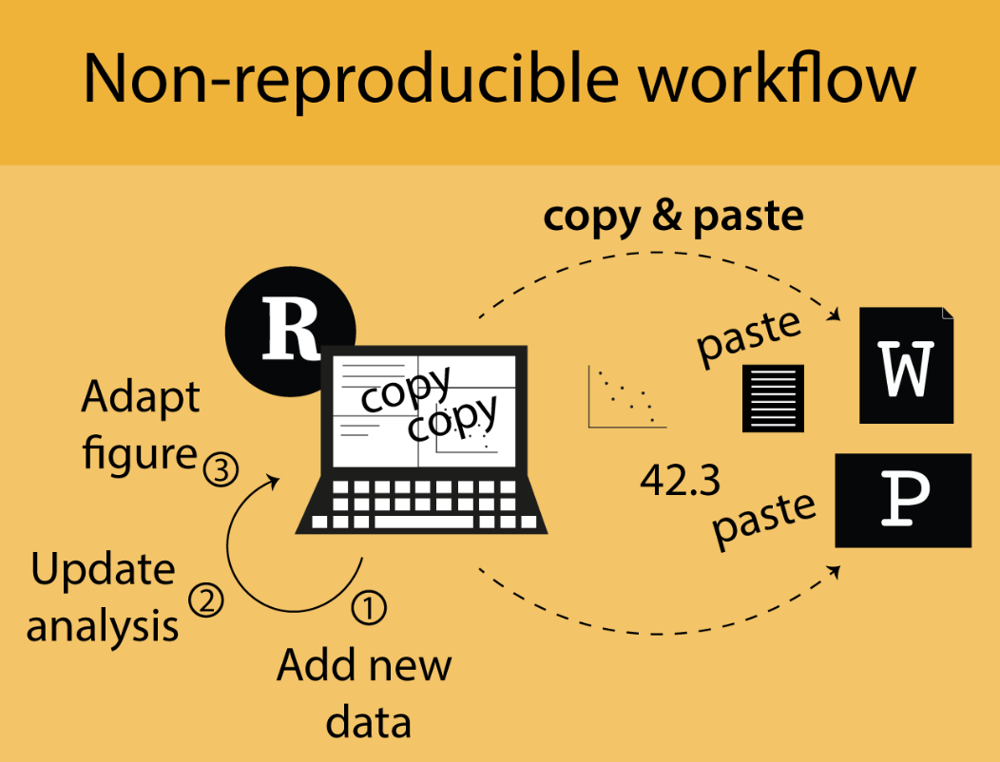
Image from “Enough Markdown to Write a Thesis” by Richard J. Telford (2025)
Solution: Quarto

Artwork from “Hello, Quarto” keynote by Julia Lowndes and Mine Çetinkaya-Rundel, presented at RStudio::Conf(2022). Illustrated by Allison Horst.
Quarto rendering

Artwork from “Hello, Quarto” keynote by Julia Lowndes and Mine Çetinkaya-Rundel, presented at RStudio::Conf(2022). Illustrated by Allison Horst.
a simple quarto (.qmd) file
---
title: "A simple yet cool Quarto file"
author: "Leo"
---
## A cool barplot
```{r}
cool_data |>
ggplot(aes(x = cool_variable)) +
geom_bar()
```Ingredients of a Quarto file:
YAML header
Markdown language
Code chunks (R, Python, SQL, Bash, Julia, etc.)
A small detour: Markdown 101
Set format in YAML header
---
title: "A simple yet cool Quarto file"
author: "Leo"
format: html
---
## A cool barplot
```{r}
cool_data |>
ggplot(aes(y = fct_infreq(cool_things) |> fct_rev())) +
geom_bar(fill = "violet") +
labs(
x = "Scale of cool",
y = NULL,
title = "Cool things in this presentation"
) +
theme_minimal() +
theme(
panel.grid.major.y = element_blank(),
panel.grid.minor = element_blank(),
plot.title = element_text(face = "bold")
)
```a simple quarto (.qmd) file in HTML
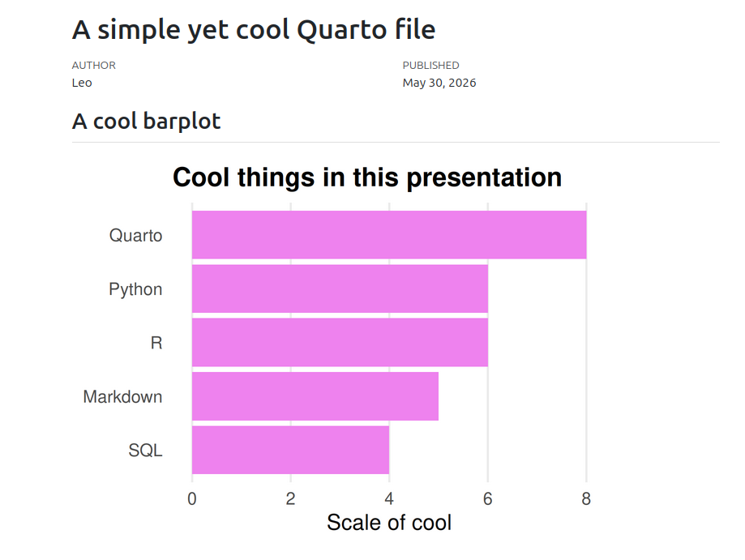
a simple quarto (.qmd) file in PDF
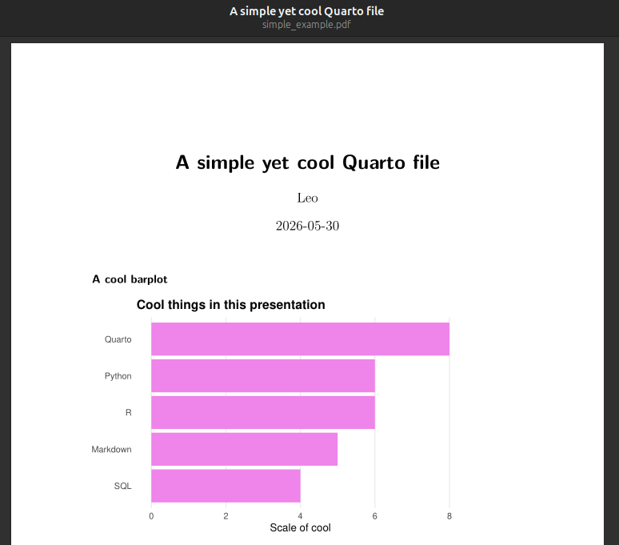
a simple quarto (.qmd) file in DOCX
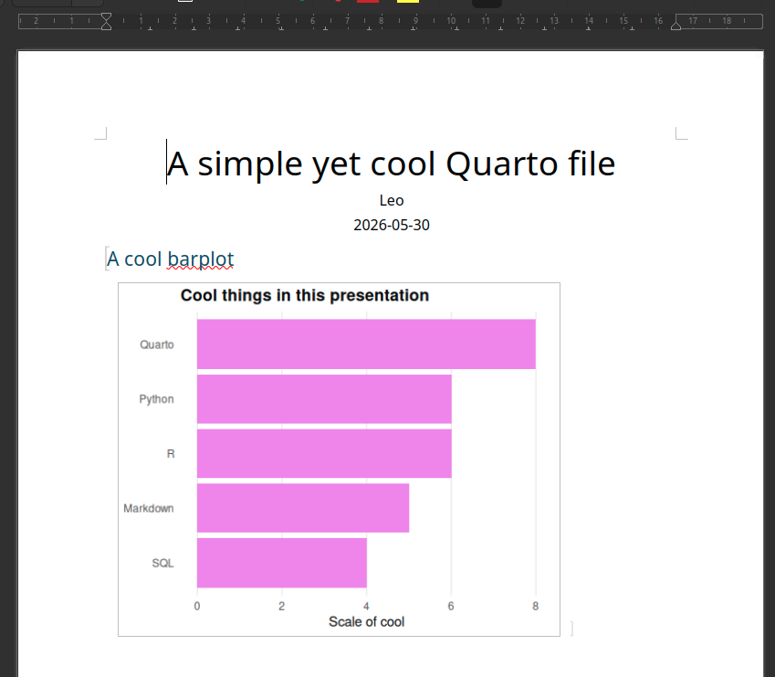
a simple quarto (.qmd) file in EPUB
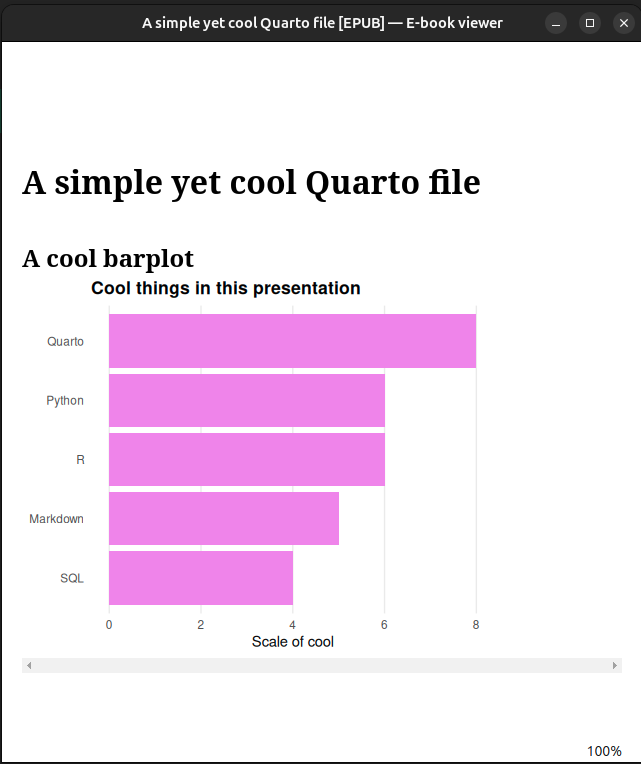
This presentation is a quarto file (in Reveal.js)
Where we are now
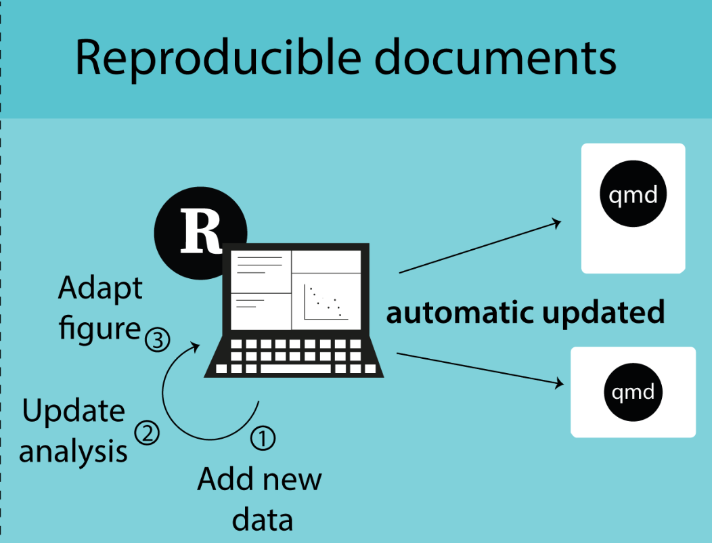
Image from “Enough Markdown to Write a Thesis” by Richard J. Telford (2025)
Mid-presentation conclusion: Quarto is cool
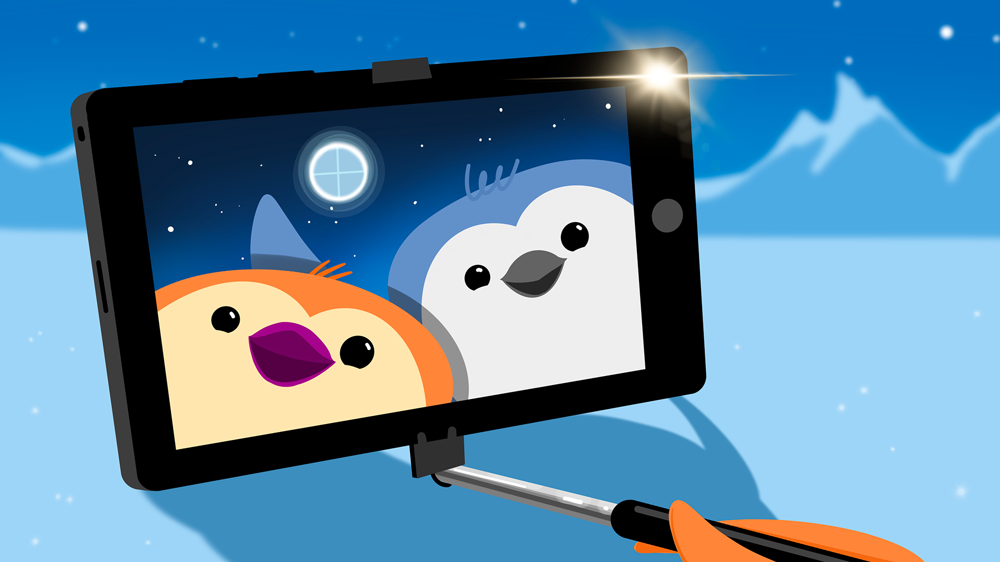
Problem n°2:
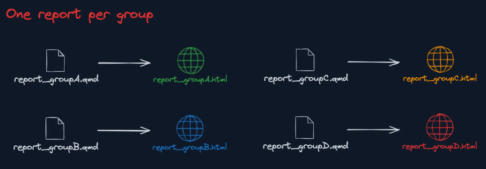
Image from the “R Productive Workflow” by Yan Holtz
Solution: Parameterized reports in Quarto
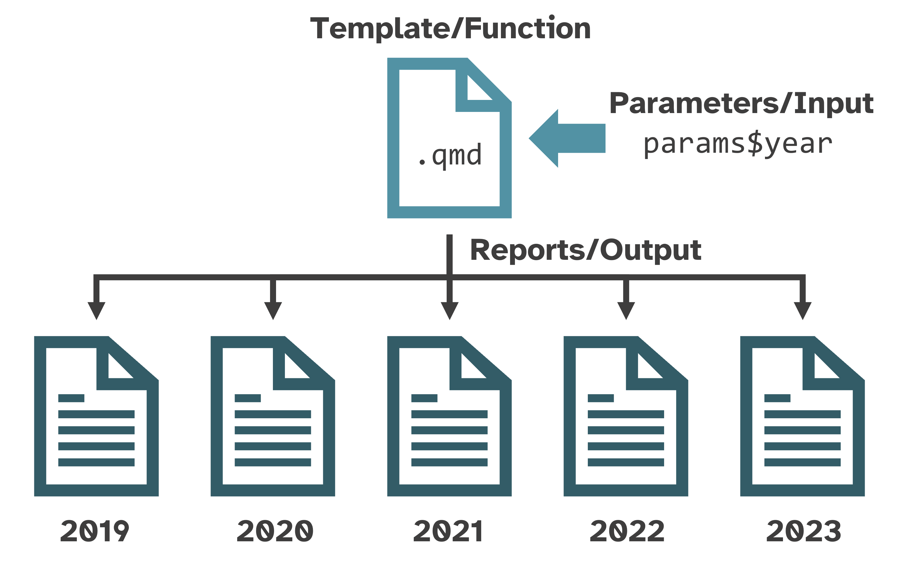
Example: Nitrogen oxides (NOX) emissions
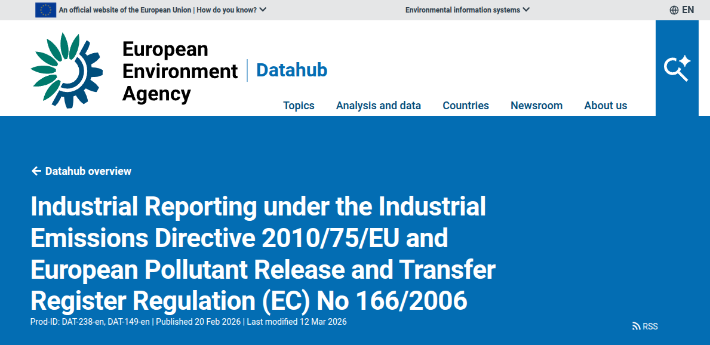
.. in Belgium and its neighbours (NL, DE, FR, LU)
Step 1: make template analysis
## Top 10 facilities emitting NOX in `r params$country` in 2023
```{r}
nox_emissions |>
filter(country == params$country) |>
arrange(desc(total_emissions)) |>
head(10) |>
ggplot(aes(
x = fct_reorder(facility, total_emissions),
y = total_emissions
)) +
geom_col(fill = "darkgreen") +
coord_flip() +
labs(
x = NULL,
y = "NOX emissions (kg)",
title = str_glue("Top NOX emitting facilities")
) +
theme_minimal() +
theme(
panel.grid.major.y = element_blank(),
panel.grid.minor = element_blank(),
plot.title = element_text(face = "bold")
)
````Step 1: make template analysis
```{r}
top_facility <- nox_emissions |>
filter(country == params$country) |>
arrange(desc(total_emissions)) |>
head(1) |>
select(facility, city, total_emissions)
)
````Step 2: Set params in YAML header
Step 3: render the reports
Where we are now
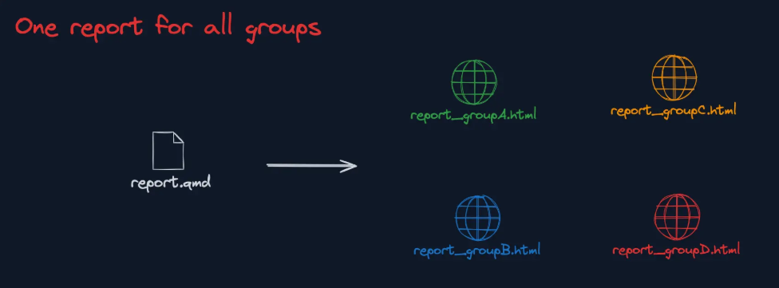
Image from the “R Productive Workflow” by Yan Holtz
Questions?
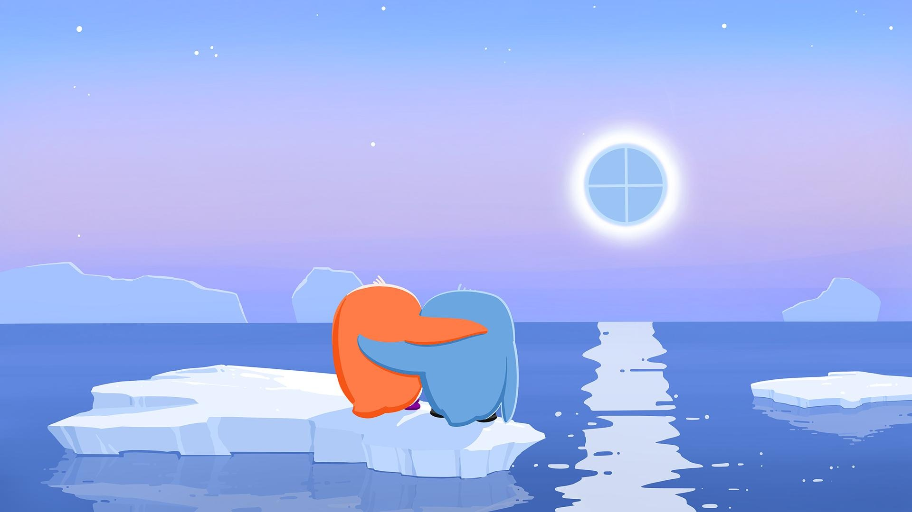
email me @ leo@journalismarena.eu